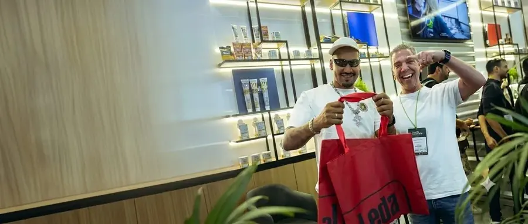

Todo mundo já recebeu um brinde que foi direto para a gaveta — e nunca mais saiu de lá. Do outro lado, existe aquela bolsa ou aquele item que a pessoa usa por anos, carregando a marca de quem deu. A diferença entre os dois não é o valor gasto: é o critério de escolha. Este guia mostra como escolher brindes para clientes que realmente são usados, e como evitar os erros que transformam o investimento em lixo.
O erro que desperdiça a maior parte do orçamento
O erro mais comum é escolher o brinde pelo preço unitário, isolado de tudo. A conta certa não é quanto custa a peça — é quanto custa cada mês de exposição da marca. Um item de dez reais que vai para o lixo em uma semana é mais caro que um de trinta que é usado por dois anos. O primeiro custa o valor inteiro por alguns dias de atenção; o segundo se paga em centenas de exposições.
A pergunta que resolve quase tudo antes de fechar o pedido é simples: essa pessoa usaria isso se tivesse comprado com o próprio dinheiro? Se a resposta for não, o brinde provavelmente não vai ser usado.
Os quatro critérios de um bom brinde
- Utilidade real — resolve algo do cotidiano de quem recebe, não do calendário de quem dá;
- Uso em público — brinde de gaveta gera zero exposição. Brinde que sai de casa trabalha por você todos os dias;
- Durabilidade — um item que quebra rápido comunica exatamente a mensagem errada sobre a sua marca;
- Marca discreta — o brinde precisa ser bom o suficiente para a pessoa querer usar. Logo gigante transforma presente em outdoor, e outdoor ninguém veste.
Esse último ponto é o mais subestimado. Uma marca aplicada com bom gosto — etiqueta tecida, bordado discreto, aviamento na cor da identidade — faz a peça ser usada. Marca berrante faz a peça ficar no armário.
Escolha pelo perfil de quem recebe
O mesmo brinde não serve para públicos diferentes. Na prática:
- Cliente corporativo / decisor — vale investir em menos peças e maior qualidade. Uma mochila executiva ou pasta bem-feita sustenta o relacionamento e é usada em reunião;
- Colaborador em onboarding — o kit de boas-vindas é a primeira impressão da empresa. Peças de uso diário funcionam melhor que itens simbólicos;
- Participante de evento ou feira — volume alto e orçamento por peça controlado. Aqui a sacochila personalizada costuma ser imbatível, porque é usada no próprio evento;
- Cliente final / consumidor — ecobags e necessaires têm ótima recompra de uso e apelo prático;
- Público fitness e esportivo — bolsas de academia e pochetes acompanham a rotina de treino várias vezes por semana.
Por que bolsas funcionam tão bem como brinde
Existe uma razão prática para bolsas dominarem as listas de brindes que dão certo: elas são usadas fora de casa, com frequência e por muito tempo. Uma caneta some, um chaveiro fica na gaveta, um copo fica na cozinha. Uma bolsa sai à rua todos os dias — e leva a marca junto.
Some a isso a área de aplicação generosa, a variedade de faixas de preço (da sacochila econômica à mochila executiva) e o fato de servirem a qualquer público, sem questão de tamanho ou gênero.
Como definir o orçamento sem errar
Em vez de partir do valor por peça, comece pelo total disponível e pelo número real de pessoas que você quer atingir. Dividir um pelo outro dá a faixa de investimento por unidade — e é a partir dela que se escolhe o produto, nunca o contrário.
Vale lembrar que o custo unitário cai conforme o volume sobe, porque a preparação da produção se dilui no lote. Às vezes aumentar um pouco a quantidade melhora tanto o unitário que permite subir de categoria de produto. A calculadora de orçamento para brindes ajuda a testar esses cenários antes de pedir proposta.
Prazo: o detalhe que estraga boas escolhas
Brinde corporativo tem uma característica cruel: a data não muda. O evento acontece, a convenção começa, o colaborador entra na segunda-feira. Por isso o planejamento reverso é obrigatório — defina a data de entrega e reserve tempo para envio, produção (até 25 dias úteis) e aprovação da peça piloto e da arte.
Quem começa cedo escolhe o brinde certo. Quem começa tarde escolhe o que dá tempo — e é assim que boas ações viram brindes esquecíveis.
Resumindo
Escolha pensando em quem recebe, não em quem dá. Prefira utilidade a novidade, priorize itens usados em público, não economize na durabilidade e aplique a marca com bom gosto. Um brinde bem escolhido não é despesa de marketing: é presença de marca no dia a dia de quem interessa.
Para ver o que fabricamos com a marca da sua empresa, conheça a linha de brindes corporativos ou veja os modelos no catálogo.
Perguntas frequentes
Qual o melhor brinde para clientes?
O melhor brinde é o que a pessoa usaria mesmo se tivesse comprado. Na prática, itens de uso diário e em público funcionam melhor: bolsas, mochilas, ecobags e necessaires acompanham a rotina por meses ou anos, enquanto brindes de mesa geram pouca exposição.
Como definir o orçamento de brindes?
Parta do valor total disponível dividido pelo número real de pessoas que você quer atingir. Isso dá a faixa por unidade, e é a partir dela que se escolhe o produto. Lembre que o custo por peça cai conforme o volume aumenta.
Qual o pedido mínimo para brindes personalizados?
Produzimos a partir de 20 unidades por modelo, com peça piloto aprovada antes do lote. Para ações de grande volume, o custo unitário fica significativamente menor.
Com quanto tempo de antecedência devo pedir?
Trabalhe de trás para frente a partir da data do evento ou da entrega: reserve tempo para o envio, para a produção (até 25 dias úteis) e para a aprovação da peça piloto e da arte. Começar cedo é o que permite escolher o brinde certo, e não apenas o que dá tempo.
O logo deve ser grande no brinde?
Não. Marca discreta e bem aplicada aumenta a chance de a peça ser usada, que é o que gera exposição. Logo muito grande transforma o presente em peça publicitária, e reduz o uso no dia a dia.
Vai montar uma ação de brindes?
Fabricação B2B de bolsas, mochilas e acessórios com a marca da sua empresa, a partir de 20 unidades. Fale com o comercial e receba uma proposta pelo seu volume e prazo.
Solicitar orçamento